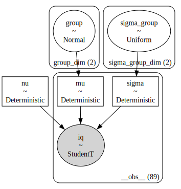
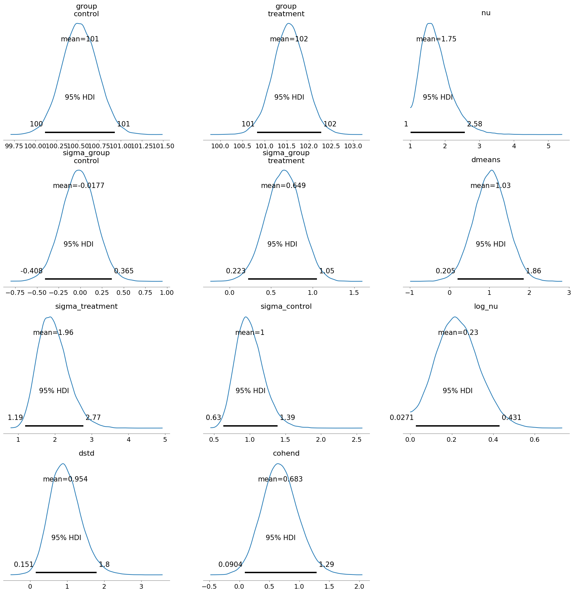

Bayesian Estimation Supersedes the t-Test in Bambi#
This code reproduces the BEST model and analysis from the Bayesian Estimation Supersedes the t-Test paper in Bambi.
See also:
Data#
%load_ext watermark
---------------------------------------------------------------------------
ModuleNotFoundError Traceback (most recent call last)
Cell In[1], line 1
----> 1 get_ipython().run_line_magic('load_ext', 'watermark')
File /opt/hostedtoolcache/Python/3.10.19/x64/lib/python3.10/site-packages/IPython/core/interactiveshell.py:2482, in InteractiveShell.run_line_magic(self, magic_name, line, _stack_depth)
2480 kwargs['local_ns'] = self.get_local_scope(stack_depth)
2481 with self.builtin_trap:
-> 2482 result = fn(*args, **kwargs)
2484 # The code below prevents the output from being displayed
2485 # when using magics with decorator @output_can_be_silenced
2486 # when the last Python token in the expression is a ';'.
2487 if getattr(fn, magic.MAGIC_OUTPUT_CAN_BE_SILENCED, False):
File /opt/hostedtoolcache/Python/3.10.19/x64/lib/python3.10/site-packages/IPython/core/magics/extension.py:33, in ExtensionMagics.load_ext(self, module_str)
31 if not module_str:
32 raise UsageError('Missing module name.')
---> 33 res = self.shell.extension_manager.load_extension(module_str)
35 if res == 'already loaded':
36 print("The %s extension is already loaded. To reload it, use:" % module_str)
File /opt/hostedtoolcache/Python/3.10.19/x64/lib/python3.10/site-packages/IPython/core/extensions.py:62, in ExtensionManager.load_extension(self, module_str)
55 """Load an IPython extension by its module name.
56
57 Returns the string "already loaded" if the extension is already loaded,
58 "no load function" if the module doesn't have a load_ipython_extension
59 function, or None if it succeeded.
60 """
61 try:
---> 62 return self._load_extension(module_str)
63 except ModuleNotFoundError:
64 if module_str in BUILTINS_EXTS:
File /opt/hostedtoolcache/Python/3.10.19/x64/lib/python3.10/site-packages/IPython/core/extensions.py:77, in ExtensionManager._load_extension(self, module_str)
75 with self.shell.builtin_trap:
76 if module_str not in sys.modules:
---> 77 mod = import_module(module_str)
78 mod = sys.modules[module_str]
79 if self._call_load_ipython_extension(mod):
File /opt/hostedtoolcache/Python/3.10.19/x64/lib/python3.10/importlib/__init__.py:126, in import_module(name, package)
124 break
125 level += 1
--> 126 return _bootstrap._gcd_import(name[level:], package, level)
File <frozen importlib._bootstrap>:1050, in _gcd_import(name, package, level)
File <frozen importlib._bootstrap>:1027, in _find_and_load(name, import_)
File <frozen importlib._bootstrap>:1004, in _find_and_load_unlocked(name, import_)
ModuleNotFoundError: No module named 'watermark'
# DATA
import pandas as pd
treated = [101, 100, 102, 104, 102, 97, 105, 105, 98, 101, 100, 123, 105,
103, 100, 95, 102, 106, 109, 102, 82, 102, 100, 102, 102, 101,
102, 102, 103, 103, 97, 97, 103, 101, 97, 104, 96, 103, 124,
101, 101, 100, 101, 101, 104, 100, 101]
controls = [ 99, 101, 100, 101, 102, 100, 97, 101, 104, 101, 102, 102, 100,
105, 88, 101, 100, 104, 100, 100, 100, 101, 102, 103, 97, 101,
101, 100, 101, 99, 101, 100, 100, 101, 100, 99, 101, 100, 102,
99, 100, 99]
groups = ["treatment"]*len(treated) + ["control"]*len(controls)
iqs = pd.DataFrame({"group": groups, "iq": treated + controls})
iqs
| group | iq | |
|---|---|---|
| 0 | treatment | 101 |
| 1 | treatment | 100 |
| 2 | treatment | 102 |
| 3 | treatment | 104 |
| 4 | treatment | 102 |
| ... | ... | ... |
| 84 | control | 100 |
| 85 | control | 102 |
| 86 | control | 99 |
| 87 | control | 100 |
| 88 | control | 99 |
89 rows × 2 columns
Custom prior using Deterministic for nu fails#
# MODEL
import bambi as bmb
import numpy as np
import pymc as pm
iqs_mean, iqs_std = iqs["iq"].mean(), iqs["iq"].std()
formula = bmb.Formula("iq ~ 0 + group", "sigma ~ 0 + group")
def ShiftedExponential(name, lam, *args, dims=None, **kwargs):
exp = pm.Exponential.dist(lam=lam)
return pm.Deterministic(name, exp+1, *args, dims=dims, **kwargs)
priors = {
"group": bmb.Prior("Normal", mu=iqs_mean, sigma=1000*iqs_std),
"sigma": {"group": bmb.Prior("Uniform", lower=np.log(iqs_std/1000), upper=np.log(iqs_std*1000))},
"nu": bmb.Prior("ShiftedExponential", lam=1/29, dist=ShiftedExponential),
}
# Build model
model = bmb.Model(formula=formula,
family="t",
link="identity",
priors=priors,
data=iqs)
# Get model description
print(model)
WARNING (pytensor.tensor.blas): Using NumPy C-API based implementation for BLAS functions.
Formula: iq ~ 0 + group
sigma ~ 0 + group
Family: t
Link: mu = identity
sigma = log
Observations: 89
Priors:
target = mu
Common-level effects
group ~ Normal(mu: 101.1798, sigma: 4744.7622)
Auxiliary parameters
nu ~ ShiftedExponential(lam: 0.0345)
target = sigma
Common-level effects
sigma_group ~ Uniform(lower: -5.3507, upper: 8.4648)
model.build()
model.graph()

model.plot_priors();
Sampling: [group, sigma_group]
idata = model.fit()
---------------------------------------------------------------------------
ValueError Traceback (most recent call last)
Cell In[6], line 1
----> 1 idata = model.fit()
File ~/Projects/Minireference/STATSbook/noBSstatsnotebooks/venv/lib/python3.12/site-packages/bambi/models.py:348, in Model.fit(self, draws, tune, discard_tuned_samples, omit_offsets, include_mean, include_response_params, inference_method, init, n_init, chains, cores, random_seed, **kwargs)
341 warnings.warn(
342 "'include_mean' has been replaced by 'include_response_params' and "
343 "is not going to work in the future",
344 FutureWarning,
345 )
346 include_response_params = include_mean
--> 348 return self.backend.run(
349 draws=draws,
350 tune=tune,
351 discard_tuned_samples=discard_tuned_samples,
352 omit_offsets=omit_offsets,
353 include_response_params=include_response_params,
354 inference_method=inference_method,
355 init=init,
356 n_init=n_init,
357 chains=chains,
358 cores=cores,
359 random_seed=random_seed,
360 **kwargs,
361 )
File ~/Projects/Minireference/STATSbook/noBSstatsnotebooks/venv/lib/python3.12/site-packages/bambi/backend/pymc.py:131, in PyMCModel.run(self, draws, tune, discard_tuned_samples, omit_offsets, include_response_params, inference_method, init, n_init, chains, cores, random_seed, **kwargs)
129 # NOTE: Methods return different types of objects (idata, approximation, and dictionary)
130 if inference_method in (self.pymc_methods["mcmc"] + self.bayeux_methods["mcmc"]):
--> 131 result = self._run_mcmc(
132 draws,
133 tune,
134 discard_tuned_samples,
135 omit_offsets,
136 include_response_params,
137 init,
138 n_init,
139 chains,
140 cores,
141 random_seed,
142 inference_method,
143 **kwargs,
144 )
145 elif inference_method in self.pymc_methods["vi"]:
146 result = self._run_vi(**kwargs)
File ~/Projects/Minireference/STATSbook/noBSstatsnotebooks/venv/lib/python3.12/site-packages/bambi/backend/pymc.py:209, in PyMCModel._run_mcmc(self, draws, tune, discard_tuned_samples, omit_offsets, include_response_params, init, n_init, chains, cores, random_seed, sampler_backend, **kwargs)
207 with self.model:
208 try:
--> 209 idata = pm.sample(
210 draws=draws,
211 tune=tune,
212 discard_tuned_samples=discard_tuned_samples,
213 init=init,
214 n_init=n_init,
215 chains=chains,
216 cores=cores,
217 random_seed=random_seed,
218 var_names=vars_to_sample,
219 **kwargs,
220 )
221 except (RuntimeError, ValueError):
222 if (
223 "ValueError: Mass matrix contains" in traceback.format_exc()
224 and init == "auto"
225 ):
File ~/Projects/Minireference/STATSbook/noBSstatsnotebooks/venv/lib/python3.12/site-packages/pymc/sampling/mcmc.py:732, in sample(draws, tune, chains, cores, random_seed, progressbar, progressbar_theme, step, var_names, nuts_sampler, initvals, init, jitter_max_retries, n_init, trace, discard_tuned_samples, compute_convergence_checks, keep_warning_stat, return_inferencedata, idata_kwargs, nuts_sampler_kwargs, callback, mp_ctx, blas_cores, model, **kwargs)
729 auto_nuts_init = False
731 initial_points = None
--> 732 step = assign_step_methods(model, step, methods=pm.STEP_METHODS, step_kwargs=kwargs)
734 if nuts_sampler != "pymc":
735 if not isinstance(step, NUTS):
File ~/Projects/Minireference/STATSbook/noBSstatsnotebooks/venv/lib/python3.12/site-packages/pymc/sampling/mcmc.py:216, in assign_step_methods(model, step, methods, step_kwargs)
214 methods_list: list[type[BlockedStep]] = list(methods or pm.STEP_METHODS)
215 selected_steps: dict[type[BlockedStep], list] = {}
--> 216 model_logp = model.logp()
218 for var in model.value_vars:
219 if var not in assigned_vars:
220 # determine if a gradient can be computed
File ~/Projects/Minireference/STATSbook/noBSstatsnotebooks/venv/lib/python3.12/site-packages/pymc/model/core.py:672, in Model.logp(self, vars, jacobian, sum)
670 rv_logps: list[TensorVariable] = []
671 if rvs:
--> 672 rv_logps = transformed_conditional_logp(
673 rvs=rvs,
674 rvs_to_values=self.rvs_to_values,
675 rvs_to_transforms=self.rvs_to_transforms,
676 jacobian=jacobian,
677 )
678 assert isinstance(rv_logps, list)
680 # Replace random variables by their value variables in potential terms
File ~/Projects/Minireference/STATSbook/noBSstatsnotebooks/venv/lib/python3.12/site-packages/pymc/logprob/basic.py:614, in transformed_conditional_logp(rvs, rvs_to_values, rvs_to_transforms, jacobian, **kwargs)
612 rvs_in_logp_expressions = _find_unallowed_rvs_in_graph(logp_terms_list)
613 if rvs_in_logp_expressions:
--> 614 raise ValueError(RVS_IN_JOINT_LOGP_GRAPH_MSG % rvs_in_logp_expressions)
616 return logp_terms_list
ValueError: Random variables detected in the logp graph: {MeasurableAdd.0, exponential_rv{"()->()"}.out}.
This can happen when DensityDist logp or Interval transform functions reference nonlocal variables,
or when not all rvs have a corresponding value variable.
Workaround using Truncated exponential for nu#
import bambi as bmb
import numpy as np
import pymc as pm
def TruncatedExponential(name, lam, *args, dims=None, **kwargs):
exp = pm.Exponential.dist(lam=lam)
return pm.Truncated(name, exp, lower=1, *args, dims=dims, **kwargs)
formula = bmb.Formula("iq ~ 0 + group", "sigma ~ 0 + group")
iqs_mean, iqs_std = iqs["iq"].mean(), iqs["iq"].std()
priorst = {
"group": bmb.Prior("Normal", mu=iqs_mean, sigma=1000*iqs_std),
"sigma": {"group": bmb.Prior("Uniform", lower=np.log(iqs_std/1000), upper=np.log(iqs_std*1000))},
"nu": bmb.Prior("TruncatedExponential", lam=1/29, dist=TruncatedExponential),
}
# Build model
modelt = bmb.Model(formula=formula,
family="t",
link="identity",
priors=priorst,
data=iqs)
# Get model description
print(modelt)
Formula: iq ~ 0 + group
sigma ~ 0 + group
Family: t
Link: mu = identity
sigma = log
Observations: 89
Priors:
target = mu
Common-level effects
group ~ Normal(mu: 101.1798, sigma: 4744.7622)
Auxiliary parameters
nu ~ TruncatedExponential(lam: 0.0345)
target = sigma
Common-level effects
sigma_group ~ Uniform(lower: -5.3507, upper: 8.4648)
model.build()
model.graph()
idata = modelt.fit(draws=10000)
Auto-assigning NUTS sampler...
Initializing NUTS using jitter+adapt_diag...
Multiprocess sampling (4 chains in 4 jobs)
NUTS: [nu, group, sigma_group]
Sampling 4 chains for 1_000 tune and 10_000 draw iterations (4_000 + 40_000 draws total) took 5 seconds.
# Calculate relevant quantities
# Difference posterior of the difference between means
post = idata["posterior"]
post_dmeans = (post["group"][:,:,1] - post["group"][:,:,0])
post["dmeans"] = post_dmeans
# Sigmas from log-sigmas
post["sigma_treatment"] = np.exp(post["sigma_group"][:,:,1])
post["sigma_control"] = np.exp(post["sigma_group"][:,:,0])
# log-nu from nu
post["log_nu"] = np.log10(post["nu"])
# Difference in standard deviations
post["dstd"] = post["sigma_treatment"] - post["sigma_control"]
# Effect size
var_pooled = (post["sigma_treatment"]**2 + post["sigma_control"]**2) / 2
post["cohend"] = post["dmeans"] / np.sqrt(var_pooled)
import arviz as az
az.summary(idata, hdi_prob=0.95)
| mean | sd | hdi_2.5% | hdi_97.5% | mcse_mean | mcse_sd | ess_bulk | ess_tail | r_hat | |
|---|---|---|---|---|---|---|---|---|---|
| group[control] | 100.520 | 0.210 | 100.113 | 100.933 | 0.001 | 0.001 | 36813.0 | 28182.0 | 1.0 |
| group[treatment] | 101.551 | 0.367 | 100.827 | 102.280 | 0.002 | 0.001 | 35216.0 | 27628.0 | 1.0 |
| nu | 1.751 | 0.444 | 1.003 | 2.581 | 0.003 | 0.002 | 22302.0 | 15491.0 | 1.0 |
| sigma_group[control] | -0.018 | 0.197 | -0.408 | 0.365 | 0.001 | 0.001 | 31643.0 | 28912.0 | 1.0 |
| sigma_group[treatment] | 0.649 | 0.212 | 0.223 | 1.049 | 0.001 | 0.001 | 29376.0 | 28177.0 | 1.0 |
| dmeans | 1.030 | 0.424 | 0.205 | 1.863 | 0.002 | 0.002 | 35401.0 | 27811.0 | 1.0 |
| sigma_treatment | 1.956 | 0.416 | 1.186 | 2.774 | 0.002 | 0.002 | 29376.0 | 28177.0 | 1.0 |
| sigma_control | 1.002 | 0.199 | 0.630 | 1.391 | 0.001 | 0.001 | 31643.0 | 28912.0 | 1.0 |
| log_nu | 0.230 | 0.104 | 0.027 | 0.431 | 0.001 | 0.000 | 22302.0 | 15491.0 | 1.0 |
| dstd | 0.954 | 0.424 | 0.151 | 1.796 | 0.002 | 0.002 | 35849.0 | 29540.0 | 1.0 |
| cohend | 0.683 | 0.305 | 0.090 | 1.289 | 0.002 | 0.001 | 34555.0 | 26943.0 | 1.0 |
az.plot_posterior(idata, round_to=3, hdi_prob=0.95);

Another workaround using CustomDist#
DOESN’T WORK – LOTS OF DIVERGENSES
import bambi as bmb
import numpy as np
import pymc as pm
formula = bmb.Formula("iq ~ 0 + group", "sigma ~ 0 + group")
iqs_mean, iqs_std = iqs["iq"].mean(), iqs["iq"].std()
# def ShiftedExpCustomDist(name, lam, **kwargs):
# def shited_exp(lam, loc, size):
# return pm.Exponential.dist(lam=lam) + loc
# return pm.CustomDist(name, lam, -1, dist=shited_exp, **kwargs)
def dist(lam, shift, size):
return pm.Exponential.dist(lam, size=size) + shift
priorscd = {
"group": bmb.Prior("Normal", mu=iqs_mean, sigma=1000*iqs_std),
"sigma": {"group": bmb.Prior("Uniform", lower=np.log(iqs_std/1000), upper=np.log(iqs_std*1000))},
#"nu": bmb.Prior("ShiftedExpCustomDist", lam=1/29, dist=ShiftedExpCustomDist),
"nu": bmb.Prior("ShiftedExponential",
lam=1/29, shift=-1.0,
dist=lambda name, lam, shift: pm.CustomDist(name, lam, shift, dist=dist, signature="(),()->()"))
}
# Build model
modelcd = bmb.Model(formula=formula,
family="t",
link="identity",
priors=priorscd,
data=iqs)
# Get model description
print(modelcd)
Formula: iq ~ 0 + group
sigma ~ 0 + group
Family: t
Link: mu = identity
sigma = log
Observations: 89
Priors:
target = mu
Common-level effects
group ~ Normal(mu: 101.1798, sigma: 4744.7622)
Auxiliary parameters
nu ~ ShiftedExponential(lam: 0.0345, shift: -1.0)
target = sigma
Common-level effects
sigma_group ~ Uniform(lower: -5.3507, upper: 8.4648)
idatacd = modelcd.fit(draws=2000)
Auto-assigning NUTS sampler...
Initializing NUTS using jitter+adapt_diag...
Multiprocess sampling (4 chains in 4 jobs)
NUTS: [nu, group, sigma_group]
Sampling 4 chains for 1_000 tune and 2_000 draw iterations (4_000 + 8_000 draws total) took 2 seconds.
There were 3 divergences after tuning. Increase `target_accept` or reparameterize.
az.summary(idatacd, hdi_prob=0.95)
| mean | sd | hdi_2.5% | hdi_97.5% | mcse_mean | mcse_sd | ess_bulk | ess_tail | r_hat | |
|---|---|---|---|---|---|---|---|---|---|
| group[control] | 100.524 | 0.207 | 100.124 | 100.929 | 0.002 | 0.002 | 7167.0 | 5499.0 | 1.0 |
| group[treatment] | 101.550 | 0.369 | 100.824 | 102.252 | 0.004 | 0.003 | 7439.0 | 5712.0 | 1.0 |
| nu | 1.744 | 0.458 | 0.943 | 2.640 | 0.007 | 0.005 | 5548.0 | 4573.0 | 1.0 |
| sigma_group[control] | -0.021 | 0.197 | -0.430 | 0.341 | 0.002 | 0.002 | 6377.0 | 5018.0 | 1.0 |
| sigma_group[treatment] | 0.645 | 0.211 | 0.206 | 1.039 | 0.003 | 0.002 | 5671.0 | 4772.0 | 1.0 |
ax = modelcd.plot_priors(var_names=["nu"])
ax.set_xlim([-3,20])
ax.axvline(0)
Sampling: [nu]
<matplotlib.lines.Line2D at 0x300f0d790>
%watermark -iv
pymc : 5.18.0
numpy : 1.26.4
bambi : 0.14.1.dev12+g3a30784
arviz : 0.19.0
pandas: 2.2.2